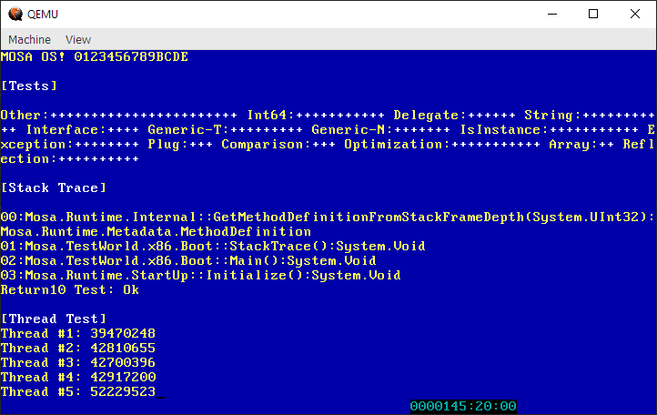
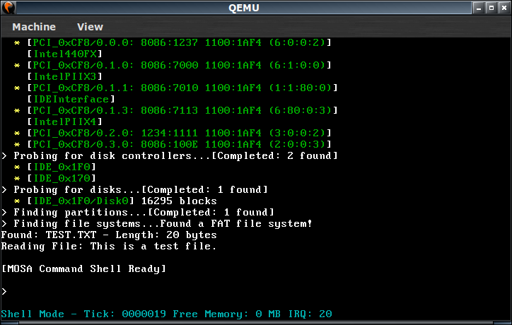

Demos¶
MOSA includes three demos applications to demostrate various capabilities of the MOSA project.
HelloWorld¶
The HelloWorld demo is the classic rendition of “Hello, World!”, except it does not actually display those words. Instead it displays basic information hardware information, such as the BIOS information, the CMOS time, and the Multiboot memory map.

The demo can be started by executing the following script: Demos\Run-HelloWorld.x86.bat.
TestWorld¶
The TestWorld demo performs version simple, basic tests to validate the compiler, runtime, and kernel functionality.
The demo can be started by executing the following script: Demos\Run-TestWorld.x86.bat.
CoolWorld¶
The CoolWorld demo utilitizes the MOSA device drivers system to enumerate hardware devices and instantiate drivers, such as for the IDE controller, disk devices, and FAT file system.
The demo can be started by executing the following script: Demos\Run-CoolWorld.x86.bat.